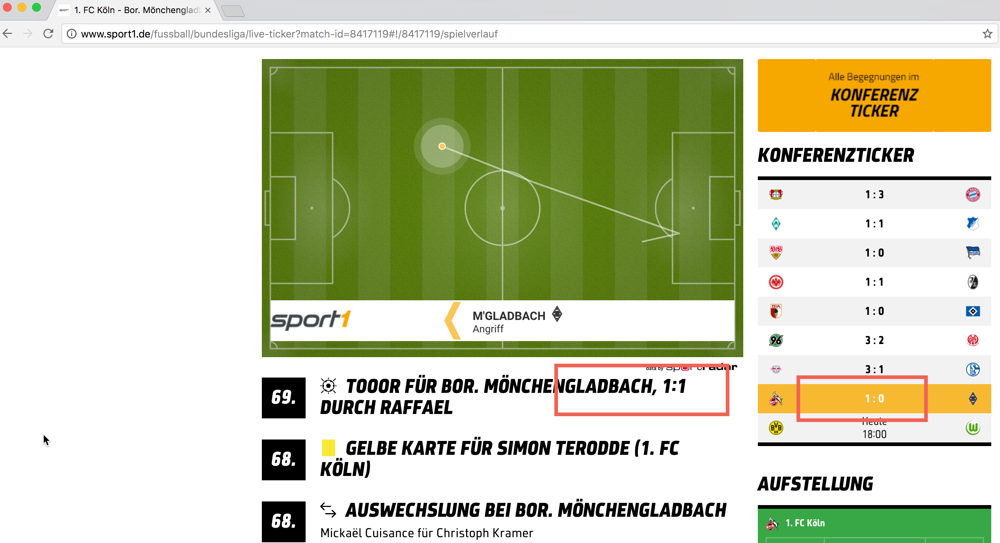

Slides: http://djcordhose.github.io/architecture/2019_wc_jsunconf.html
const template = `
<input id="in">
<p><span id="log">, World
<input id="btn" type="button" value="Clear">`
class MyElement extends HTMLElement {
constructor() {
super();
this.attachShadow({mode: 'open'});
this.shadowRoot.innerHTML = template;
this.input = this.shadowRoot.querySelector("#in");
this.log = this.shadowRoot.querySelector("#log");
this.button = this.shadowRoot.querySelector("#btn");
}
connectedCallback() {
this.input.addEventListener("keyup", event => this.model = event.target.value);
this.button.addEventListener("click", event => this.model = "");
}
set model(value) {
this.log.textContent = value;
this.input.value = value;
}
}
customElements.define('my-element', MyElement);
# from perspective of user
<script src="./my-element-pure.js">
<my-element>
https://lit-element.polymer-project.org/
https://project-awesome.org/web-padawan/awesome-lit-html
@customElement('my-element')
class MyElement extends LitElement {
@property() greeting: string = 'Hello';
render() {
return html`
<input value="${this.greeting}"
@keyup="${(event: any) => this.greeting = event.target.value}">
<p>${this.greeting}, World</p>
<input type="button" value="Clear" @click="${this.handleClick}">`;
}
handleClick() {
this.greeting = '';
}
}
# using the web component
<script src="./my-element-pure.js">
<my-element></my-element>
From Angular (Overview) to React (Field and Ticker)
Custom Elements with JavaScript ES6 Modul
// Custom Element
class MyElement extends HTMLElement {
connectedCallback() {
// render Angular / React component
}
}
customElements.define('my-element', MyElement);
<script>
// JavaScript module import
import 'my-element';
</script>
<div>
<my-element greeting="Hello"></my-element>
</div>